区分フィット (Pro)
Piecewise-Fit
概要
区分フィットアプリ使用して、データプロットを2つまたは3つに区分けし、同じ関数または異なる関数でフィット可能です。
このチュートリアルでは、2つのセグメントを持つ曲線を区分関数フィットします。指数関数的に減少している最初のセグメントは関数"ExpDec1"でフィットし、2番目のセグメントは直線でフィットします。
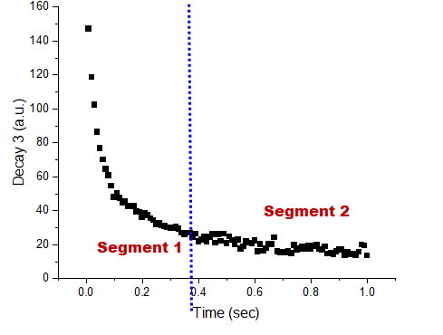
チュートリアル
- Piecewise Fit（区分フィット）アプリがインストールされている状態でこのチュートリアルを開始します。このアプリをインストールしていない場合は、アプリギャラリーのアプリを追加ボタンをクリックしてアプリセンターを開き、このアプリを検索してインストールします。
- ワークシートを新規作成し、データ>ファイルに接続: テキスト/CSVメニューを選択して、サンプルファイル<Originプログラムフォルダ>Piecewise Fit\Exponential Decay.dat をインポートします。
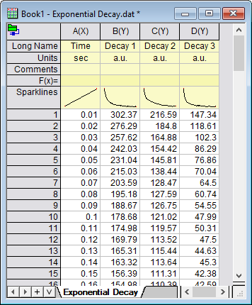
- 列Dを選択して散布図としてプロットします。アプリアイコン
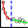
をクリックしてアプリダイアログを開きます。
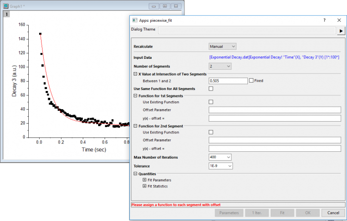
- 区分の数を2に設定し、 最初の区分と2番目の区分の両方で既存の関数を使用を選択します。そして、最初の区分でExpDec1、2番目の区分でLineを関数として選択します。
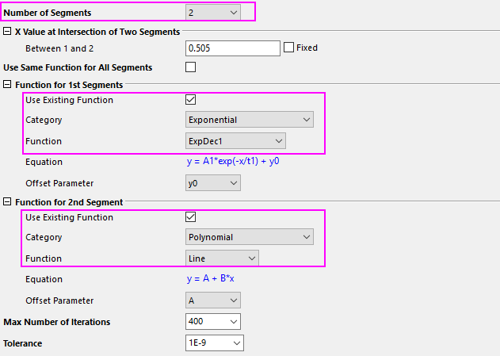
- 2つのセグメントの交点がわかっている場合は、それを1と2の間ボックスに入力し、固定にチェックを付けて固定します。この例では、交点は不明なので固定しません。
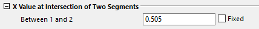
- 組み込み関数を使用しない場合は、既存の関数を使用ボックスのチェックを外し、次のように関数式を入力します。
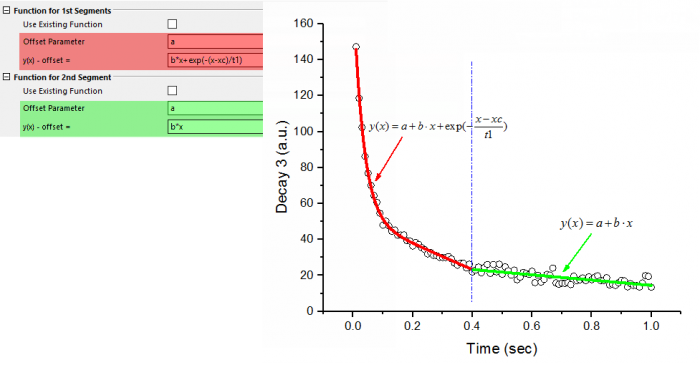
- パラメーターの初期値を設定する場合は、ダイアログの下部にあるパラメータボタンをクリックしてパラメータダイアログを開きます。
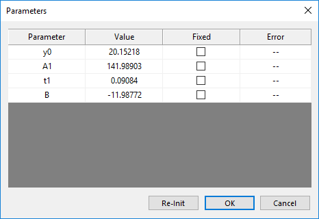
- 出力結果をカスタマイズする場合は、フィットパラメータおよびフィットの統計ブランチを開き、出力する値をチェックします。
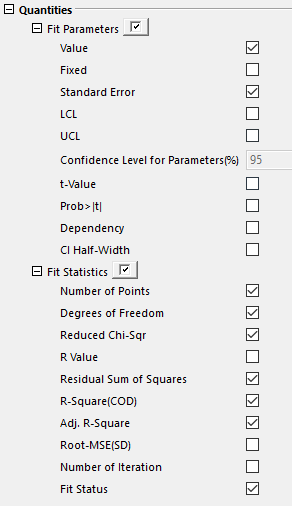
- 設定したら、1回反復をクリックして1階反復計算を実行します。フィットボタンをクリックし、フィットを実行します。フィット状態を知らせる情報メッセージがポップアップします。
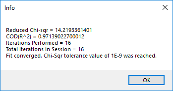
- OKボタンをクリックしてメッセージを閉じ、OKボタンをクリックしてダイアログを閉じて、フィット結果を出力します。
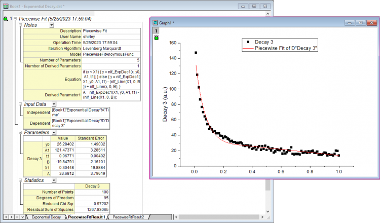